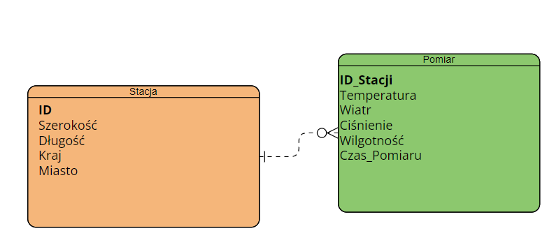

2. Instrukcja obsługi aplikacji klienckiej¶
- Authors:
Michał Łabowicz
- Version:
1.0 of 21.06.2023
- Course:
Databases I
Wybrane zagadnienie i przyjęty model danych¶
Wybrany przeze mnie scenariusz zakłada zbieranie danych pogodowych ze pogodowych. Zbierane informacje przechowywane są w dwóch tabelach (relacjach) - Stacje oraz Odczyty. Każda stacja ma unikatowy identyfikator (ID), z którym powiązany jest każdy odczyt na zasadzie klucza obcego. Poniżej model danych w postaci diagramu ERD.
{kind=link}
Obsługa aplikacji klienckiej¶
Aplikacja została napisana w postaci pakietu Python. Wykorzystany jest moduł sqlite3 do obsługi bazy danych. W celu uruchomienia aplikacji mobilnej należy, z poziomu katalogu głównego projektu użyć polecenia:
python3 bazasql.py
Po uruchomieniu aplikacji baza danych utworzy się automatycznie a,użytkownik ma do wybrania kilka opcji, po których użytkownik może nawigować za pomocą znaków wprowadzanych z klawiatury.
Dodanie stacji
Dodanie pomiaru ze stacji (musi istnieć stacja)
Usunięcie pomiaru lub stacji
Zmiana pomiaru
Generowanie losowych danych (stacji lub pomiarów ze stacji)
Usunięcie całej bazy danych
Zapisanie do pliku CSV
Wyjście
Dodawane odczyty samodzielnie generują kraj jak i miasto. Dodawane odczyty mają domyślną aktualną datę pobraną z urządzenia. Podczas usuwania stacji zostaną usunięte także wszystie związane z nią pomiary. Usunięcie pomiaru usuwa wszystkie pomiary z danej stacji ze zgodnym czasem co do minuty. Podobnie działa zmiana pomiaru.
Generowanie losowych stacji jak i dodawanie nowych samodzielnie korzysta z biblioteki “geopy”. Wprowadza ona pewne ograniczenie więc nie należy podawac zbyt dużych wartości(>100).